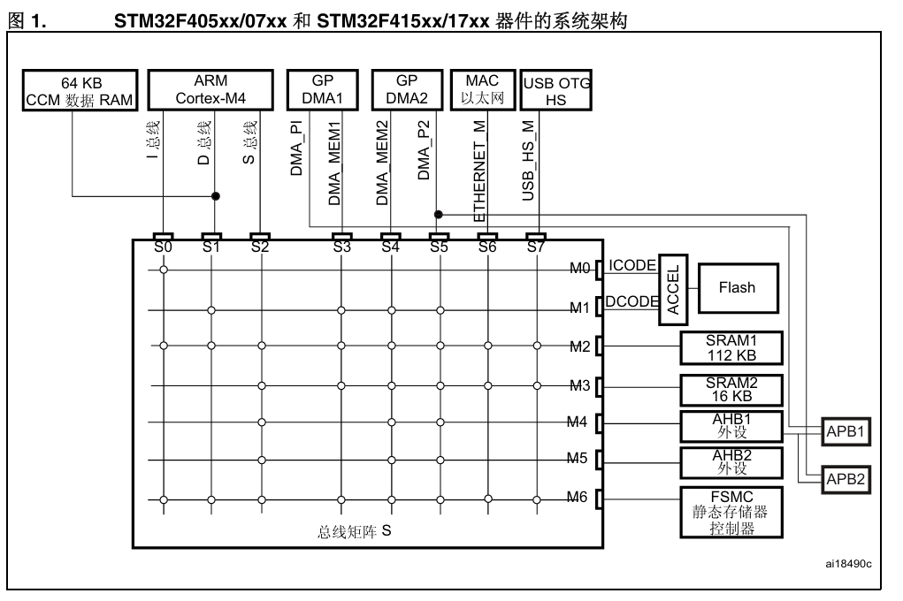
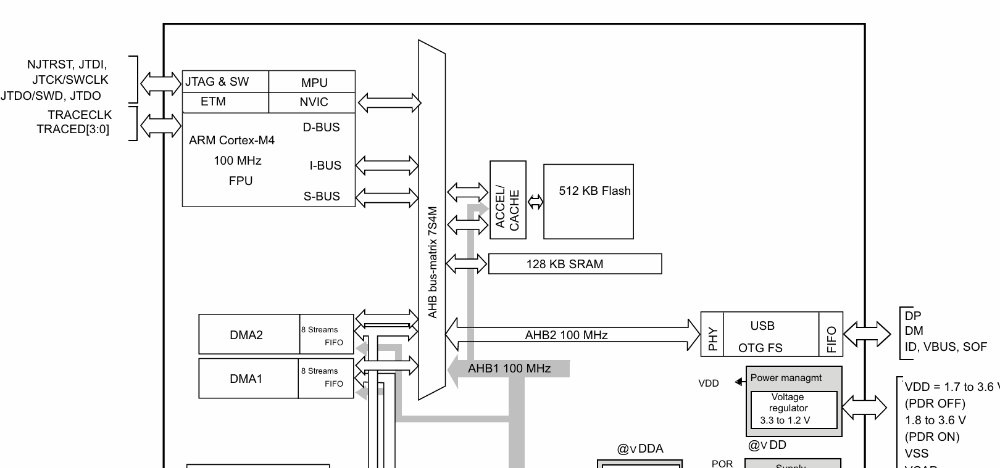
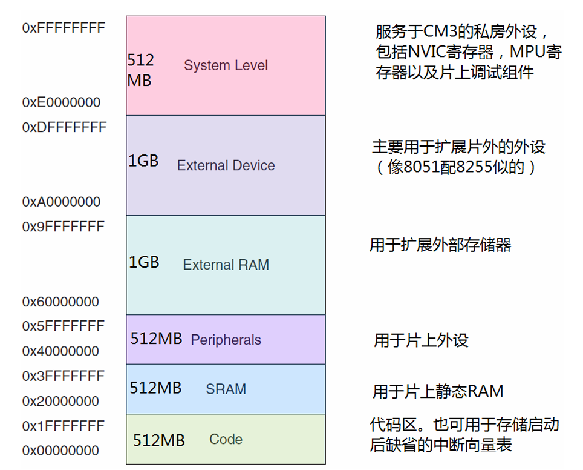

08 STM32
STM32
1.系统架构
STM32F4系列的系统架构如图所示（来自User Manual）：
可以看到内核通过3条总线连接到AHB(Advanced High-performance Bus)总线矩阵，然后与各个外设、Flash和SRAM连接
Data Sheet里面也有个比较好的架构图：

内核总线
ARM Cortex-M系列的CPU都包含以下3条总线：
- I-Bus：指令总线，负责在 0x0000_0000 – 0x1FFF_FFFF 之间的取指操作，访问的存储器对象是Flash
- D-Bus：数据总线，负责在 0x0000_0000 – 0x1FFF_FFFF 之间的数据访问操作，访问的存储器对象是Flash
- S-Bus：系统总线，负责在 0x2000_0000 – 0xDFFF_FFFF 和 0xE010_0000 – 0xFFFF_FFFF 之间的所有数据传送，取指和数据访问都算上，访问对象是SRAM和外设寄存器
不同内核实际上各个总线能访问的地址范围不一样
参考：
- Cortex-M3权威指南第六章
- STM32 User Manual
2.内存映射
ARM Cortex-M系列的CPU将所有CPU能访问到的资源（包括Flash、SRAM、外设寄存器、I/O端口）都映射到了同一个大小为4GB的地址空间中，不同的存储器位于不同的一段地址上，且大部分区域实际上都没用到，作为保留区
ARM Cortex-M规定了一个大致的范围，各个芯片原厂又在这个范围中进一步定制存储器的地址范围
STM32中重要存储区域的基地址：
- Flash模块的主存储器：0x0800_0000（Flash分为多个部分，详细请看User Manual第四章）
- SRAM：0x2000_0000
- 外设寄存器：0x4000_0000
All articles on this blog are licensed under CC BY-NC-SA 4.0 unless otherwise stated.